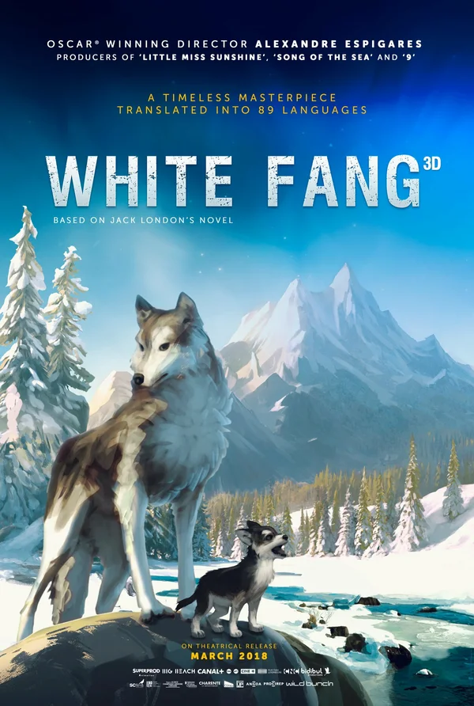

|  | «Белый Клык» (англ. White Fang) — приключенческая повесть Джека Лондона, главным героем которой является гибрид собаки и волка по кличке Белый Клык. Впервые произведение опубликовано в нескольких номерах журнала The Outing Magazine с мая по октябрь 1906 года. Книга рассказывает о судьбе прирученного волка во время золотой лихорадки на Аляске в конце XIX века. При этом довольно большая часть произведения показана глазами животных и, в частности, самого Белого Клыка. В повести описывается разное поведение и отношение людей к животным. |
|---|
| Отец Белого Клыка был волком, а мать, Кичи, — наполовину волчица, наполовину собака. Он родился в Северной Глуши и выжил единственный из всего выводка. На Севере часто приходится голодать, это и погубило его сестёр и братьев. Отец, одноглазый волк, вскоре погибает в неравной схватке с рысью. Волчонок и мать остаются вдвоём. Мир полон неожиданностей, и однажды по дороге к ручью волчонок натыкается на незнакомых ему существ — людей. Оказывается, у его матери был хозяин — брат индейца Серого Бобра. Он вновь становится хозяином Кичи. Ему же теперь принадлежит и волчонок, которому он даёт имя — Белый Клык. Вскоре брат уезжает, отдавая собак Серому Бобру как долг. Белому Клыку трудно привыкать к новой жизни в стойбище индейцев: он беспрестанно вынужден отражать атаки собак, ему приходится строго соблюдать законы людей, которых он считает богами, зачастую жестокими, иногда — справедливыми. Вызывая у своих собратьев и у людей только одну ненависть и вечно враждуя со всеми, Белый Клык развивается быстро, но односторонне. Во время смены места стойбища Белый Клык убегает, но, очутившись один, ощущает страх и одиночество. Гонимый ими, он разыскивает индейцев. Белый Клык становится ездовой собакой. Спустя какое-то время его ставят во главе упряжки, что ещё более усиливает ненависть к нему его собратьев, которыми он правит со свирепой непреклонностью. Усердная работа в упряжке укрепляет силы Белого Клыка, и его умственное развитие завершается. Преданность человеку становится для него законом, и из родившегося на воле волчонка получается собака, в которой много волчьего. |
|---|
| Однажды, подпоив Серого Бобра, Красавчик Смит покупает у него Белого Клыка и жесточайшими побоями заставляет того понять, кто его новый хозяин. Белый Клык ненавидит этого сумасшедшего бога, но вынужден повиноваться ему. Красавчик Смит делает из Белого Клыка настоящего профессионального бойца и устраивает собачьи бои. Но драка с бульдогом чуть не становится для Белого Клыка роковой. Видя, что бой проигран, Красавчик Смит избивает Белого Клыка. Собаку спасает приезжий инженер с приисков Уидон Скотт. Разжав с помощью револьверного ствола челюсти бульдога, он освобождает Белого Клыка от смертельной хватки противника и выкупает пса у Красавчика Смита.Белый Клык вскоре приходит в себя и выказывает новому хозяину свои злобу и ярость. Но у Скотта хватает терпения приручить собаку лаской. Это пробуждает в Белом Клыке дремавшие чувства. В Калифорнии Белому Клыку приходится привыкать к новым условиям. Овчарка Колли, долго досаждавшая псу, становится его подругой, как и дети Скотта. Судью Скотта Белому Клыку удаётся уберечь от мести осуждённого им отпетого преступника Джима Холла. Белый Клык загрыз Холла, но тот всадил в пса три пули, в схватке у пса оказалась сломана задняя лапа и несколько рёбер. После долгого выздоровления с Белого Клыка снимают все повязки, и он, пошатываясь, выходит на солнечную лужайку и видит Колли со щенками. |
|---|